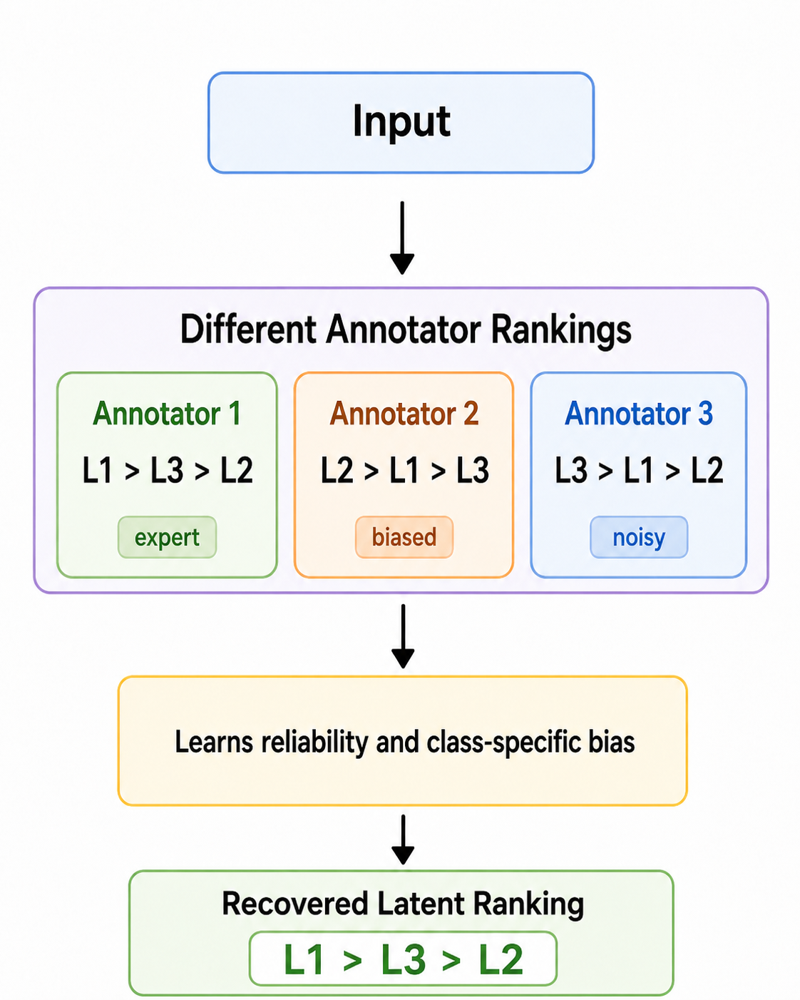
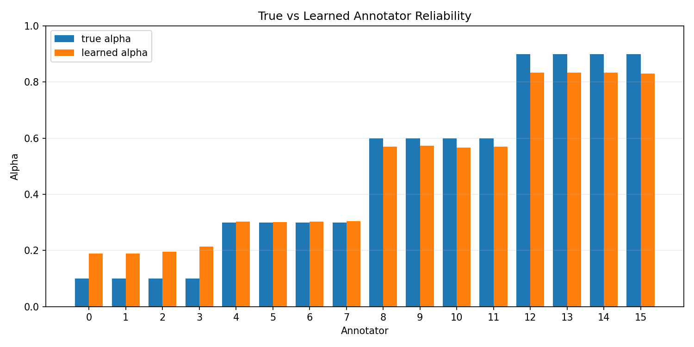
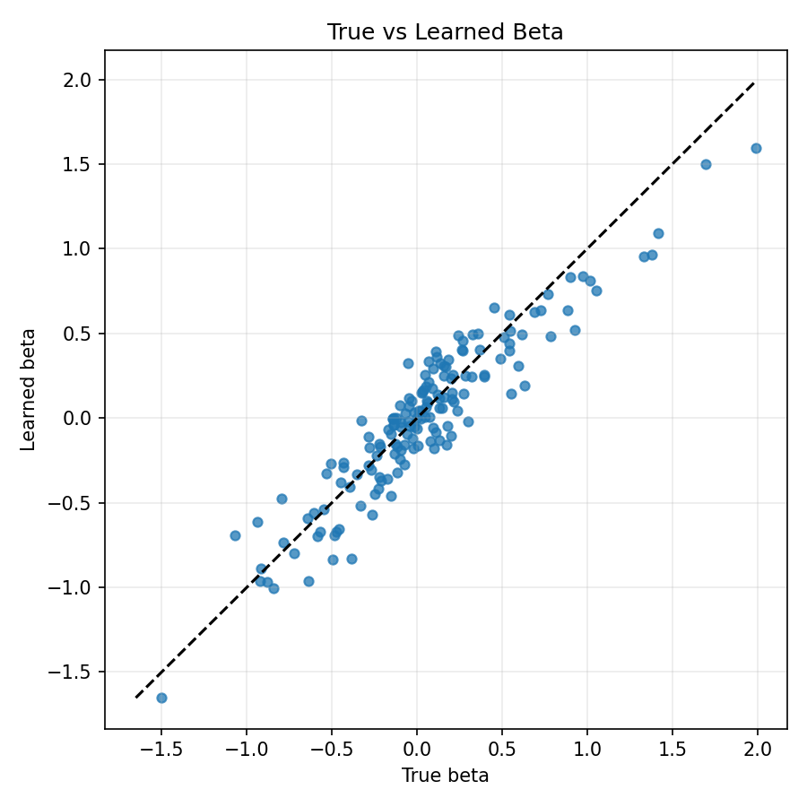
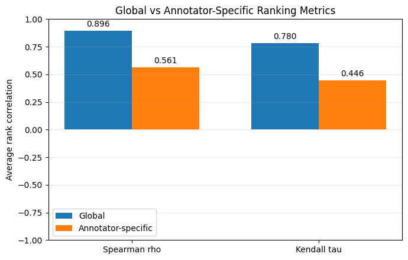
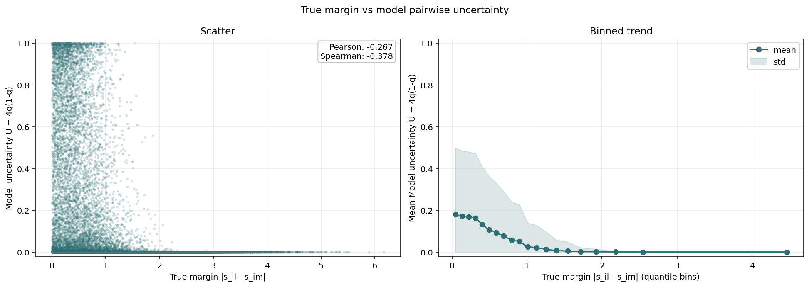
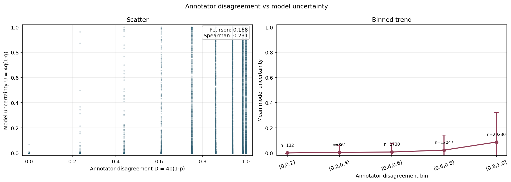
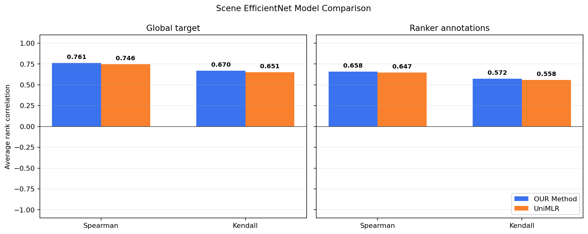

Graduation Project
Learning Label Rankings From
Multi-Annotator Disagreement

Project Team
- Student: Ömer ERDAĞ
- Academic Advisor: Prof.Dr. Gözde ÜNAL
Project Description
This project focuses on learning the underlying ground-truth label ranking from subjective and inconsistent multi-annotator rankings. Instead of directly trusting a single annotator or averaging all annotations, the model learns from annotator disagreement to recover a more reliable latent ranking signal.
The framework predicts latent label significance scores and uses learned annotator reliability and class-specific bias parameters to produce annotator-specific predictions. It is trained with a joint classification and ranking objective and evaluated on both synthetic and Scenery datasets.
Technologies Used

Project Outcomes
Our results show that the proposed annotator-aware ranking model can learn reliable latent rankings from noisy multi-annotator data. The evaluations demonstrate success in parameter recovery, ranking performance, and uncertainty-based ambiguity analysis.

Annotator Reliability Recovery
The recovered alpha values closely follow the true annotator reliability values from the simulator. This shows that our method successfully learns which annotators are more reliable.

Annotator Bias Recovery
The learned beta parameters align with the true synthetic annotator biases. This result shows that our method can capture systematic label-specific bias.

Performance On Synthetic Dataset
The synthetic dataset results show strong global ranking performance and meaningful annotator-specific prediction quality. This confirms that the model learns both the shared ranking structure and annotator behavior.

True Ambiguity Analysis
The ambiguity analysis shows that model uncertainty increases when true label margins are small. This supports that our uncertainty estimates reflect the inherent difficulty of the ranking problem.

Annotator Disagreement Analysis
The disagreement analysis shows a positive relationship between annotator disagreement and model uncertainty. This indicates that our method captures human ambiguity in the ranking annotations.

Performance On Scenery Dataset
On scenery images, Our Method improves over the UniMLR baseline in both global and ranker-specific evaluations. These results demonstrate the benefit of ranking with annotator-aware modelling.